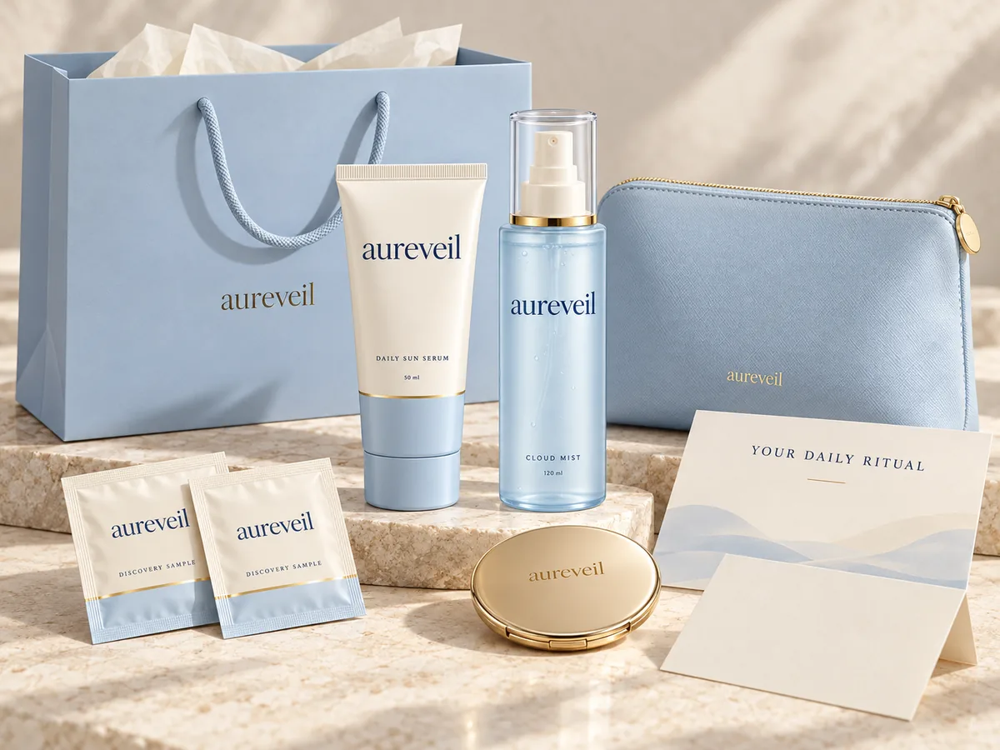

Thoughtful extras to help you discover your essential, organise your routine and make a gift feel personal.

Considered, down to the little things
Discover. Keep. Give thoughtfully.
Every purchase includes two Sun Serum discovery sachets, a printed ritual card and complimentary digital resources.
The duo adds an Everyday Pouch and pocket mirror. Choose gift packaging on request for a bag, tissue and blank message card at no extra charge.
A little generosity, with purpose
Useful things. Thoughtfully included.
Your essentials stay the focus.
WITH ANY PRODUCT
Your discovery edit.
Two Daily Sun Serum discovery sachets
Printed quick-start ritual card
Daily Skin Guide PDF
Printable tracker and optional calendar reminder
WITH THE PROTECT + REFRESH DUO
Your everyday kit.
All discovery extras, plus:
Aureveil Everyday Pouch
Slim pocket mirror
WHEN YOUR DUO IS A GIFT
A thoughtful gesture.
Request these complimentary additions:
Pastel-blue gift bag
Ivory tissue
Blank message card
Choose your little ritual
Your edit. Your included extras.
Explore the gifts for each product choice. For a duo gift, select the packaging option, copy the request and confirm it through seller chat.
Digital resources are yours to download here. You do not need to wait for a delivery to read the guide.
Your complimentary extras.
Two Daily Sun Serum discovery sachets
Printed quick-start ritual card
Daily Skin Guide PDF
Seven-day tracker and optional calendar reminder
YOUR ORDER REQUEST
My selection is Daily Sun Serum (50ml). Please include the complimentary discovery sachets and ritual card. Please confirm these details with my order.
Copy your request, then open the listing and confirm it with the seller before completing your order. Digital resources are available to download below.
Use the Sun Serum sachets to meet the texture while keeping your full-size item sealed until you decide. Follow the product directions and introduce new skincare thoughtfully.
What complimentary gifts come with an individual product?+
Every individual-product purchase includes two Daily Sun Serum discovery sachets and a printed ritual card. The Daily Skin Guide PDF, printable tracker and optional calendar reminder are available in our complimentary library.
What extra gifts come with the duo?+
The Protect + Refresh Duo includes all discovery extras, plus an Aureveil Everyday Pouch and slim pocket mirror. Complimentary gift packaging is available on request.
How do I request a gift bag and message card?+
On the Welcome Kit page, choose the duo and select Make the duo a gift. Copy your request and confirm it through the listing’s seller chat before completing the order. The request includes a gift bag, tissue and a blank message card.
Do the sachets contain Cloud Mist?+
No. The included discovery sachets contain Daily Sun Serum. They introduce the SPF texture, including for someone who buys Cloud Mist. A mist spray mini is not included.
Does trying one sachet prove that it will suit my skin?+
No. A small sample offers an initial experience of texture and feel. It does not guarantee tolerance, establish an allergy test or replace the small-area introduction guidance.
Can I use a sample and return an unopened full-size item?+
Yes, under our 14-day sample-first policy. Request within 14 days of delivery, keep the full-size item unopened and sealed, and return included reusable gifts and unused samples. The customer pays change-of-mind return postage; used discovery sachets are exempt.
Can I keep the gifts if I return the full-size product?+
Included reusable gifts and unused samples must accompany a sample-first return. Used discovery sachets do not need to be sent back. Read the complete policy before posting a return.
Can the welcome discount be used with complimentary gifts?+
Yes. The included extras remain available with the 10% first-purchase offer. The gift choice does not change the product price.
What does the calendar file do?+
It contains a daily routine reminder for the date, local time and number of days you choose. Downloading the file does not add an event automatically; you decide whether to import it into your calendar.